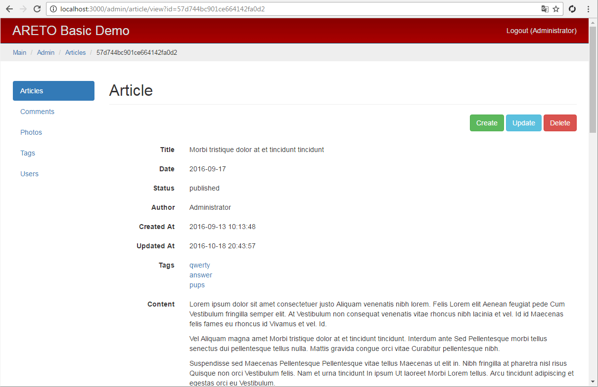

Admin article controller
The ArticleController class is responsible for the actions of article.
module/admin/controller/ArticleController.js

The actionIndex method lists articles to search and sort by ID, status or title.
Each article is loaded together with related models (author, mainPhoto)
are required to display it in the list.
module/admin/controllers/ArticleController.js

The actionView method shows an article.
The author, photos, mainPhoto, tags related models are loaded along with an article.
Paging a list of comments related to an article formed from the relComments
relation by using the ActiveDataProvider data provider.
module/admin/controller/ArticleController.js
The actionCreate method creates a new article.
The authorId attribute containing article author, is set by the current user.
module/admin/controller/ArticleController.js

The actionUpdate updates an article.
Found article is checked for access for the current user.
Parameters ({ authorId: model.get('authorId') })
used for initialization of business rules of access,
are passed to the can asynchronous function by the last argument.
module/admin/controller/ArticleController.js